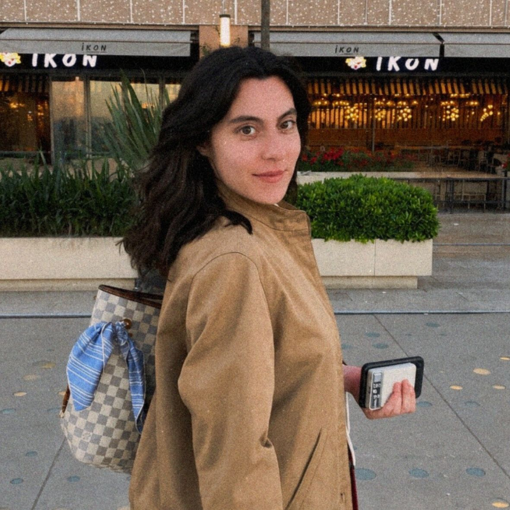

Örüntüyü gör
Otomatik tepkilerinin ve tekrar eden seçimlerinin ardına bak.
Kendini anlamak, aynı döngüleri neden tekrarladığını görmek ve farkındalığı gerçek hayatta değişime dönüştürmek için. Klişelerden değil, kendine dürüstçe bakmaktan başlayalım.

Dış dünya, iç dünyanızın bir yansımasıdır.Adalin Sohtorik · kişisel yaklaşım
İnsan zihnini tek bir kalıpla açıklayamayız. Bazen aynı düşünceyi tekrar eder, aynı ilişkisel döngüye döner veya ne yapmamız gerektiğini bildiğimiz hâlde harekete geçemeyiz.
Çalışmalarımda felsefe, psikoloji, nörobilim, ilişkiler ve beden-zihin bağlantısı üzerine öğrendiklerimi; öz farkındalık ve uygulanabilir küçük adımlarla bir araya getiriyorum.
Amacım size hazır cevaplar vermek değil. Kendi örüntülerinizi fark etmenize, seçimlerinizi daha bilinçli yapmanıza ve zamanla kendi kendinizin mentoru olmanıza eşlik etmek.
Otomatik tepkilerinin ve tekrar eden seçimlerinin ardına bak.
Yargılamadan, işine yaramayan alışkanlıkların işlevini keşfet.
Büyük vaatler yerine sürdürülebilir küçük adımlar oluştur.
TikTok'ta sevdiğin ilk çağrışım formatından ilham alan küçük bir başlangıç. Bir cevabı fazla düşünmeden seç ve sende uyandırdığı anlamı keşfet.
Bu mini egzersiz bilimsel bir kişilik testi veya psikolojik değerlendirme değildir; yalnızca kendine soru sormak için bir davettir.
Seçimin bir teşhis ya da kesin kişilik analizi değildir. Önemli olan, sende uyandırdığı kişisel çağrışım.
İhtiyacına ve hedeflerine göre sana uygun çalışma biçimini birlikte netleştirebiliriz. Güncel içerik ve ücretleri danışmanlık sayfamdan kontrol edebilirsin.
Tanışmak, beklentilerini konuşmak ve birlikte çalışmanın sana uygun olup olmadığını değerlendirmek için kısa bir görüşme.
Tekrarlayan örüntülerini, hedeflerini ve değiştirmek istediğin davranışları daha yakından ele almak için bireysel seans.
Farkındalığı günlük yaşama taşımak, yeni alışkanlıkları denemek ve süreci pekiştirmek için çok adımlı çalışma.
Danışanlardan gelen geri bildirimlerden kısa alıntılar.
“Kendimi bir uzmanın odasında değil de, beni çok iyi anlayan eski bir dostumla kahve içip dertleşiyor gibi hissettim. Klişe dışında şeyler duymak bana çok iyi geldi.”Danışan geri bildirimi
“Konuşurken kendimi daha net görmeye başladım, farkında olmadığım şeyleri fark ettim. Egzersiz kitapçığı için ayrıca teşekkür ederim, gerçekten işe yaradı.”Danışan geri bildirimi
“Sorduğunuz sorularla olayları farklı düşünmeye yönlendiren, nokta atışı tespitler yapan ve bunu samimiyetiyle hissettiren bir mentör.”Danışan geri bildirimi
Blog yazılarını daha sonra buraya taşıyabiliriz. Şimdilik senin yaklaşımını yansıtan üç başlangıç konusu.
Bilgi ile deneyim arasındaki mesafe, küçük eylemlerle nasıl kapanır?
Yazılara göz at ↗ İlişkilerEtiketlerden uzaklaşıp kendi seçimlerini ve ihtiyaçlarını anlamak üzerine.
Yazılara göz at ↗ Eylem ve disiplinBazen değişim, büyük bir karar değil bugün atılan küçük bir adımdır.
Yazılara göz at ↗Birlikte çalışmanın sana uygun olup olmadığını anlamak için ücretsiz ön görüşmeyle başlayabilirsin.
Ücretsiz ön görüşme ↗